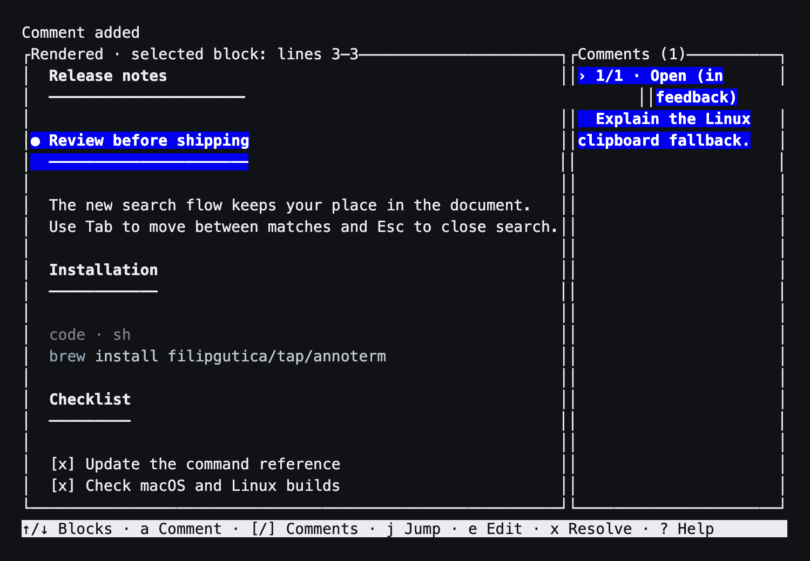

Annoterm
Read it. Mark it. Send it back.
Review Markdown and turn your comments into precise feedback for a coding agent.


Install
brew install filipgutica/tap/annotermHomebrew builds the tagged release from source and installs Rust as a build dependency.
Install Homebrew first if the brew command is unavailable. See the README for installation details.
From document to feedback
Open a document
Select a rendered block with the arrow keys, then press a to add a comment.
annoterm README.mdCopy your feedback
Annoterm copies feedback after comment changes and again when you quit with open comments. Use this command to copy it again.
annoterm copy-feedback README.mdExport a review
Write the feedback to a file. Add --force only if you want to replace an existing export.
annoterm export README.md --output feedback.mdKeep these close
Ctrl+R- Switch between rendered Markdown and raw source.
Ctrl+K- Comment on a raw selection or rendered block.
Ctrl+S- Save changes in raw mode.
q- Quit from rendered mode and copy open comments.
Comments live in a local JSON sidecar, separate from your document. Saves stop if another process changed the source. On Linux, clipboard support can require wl-copy or xclip.
More tools for local work
All three tools are available from Filip’s Homebrew tap.